1. São Paulo
A maior cidade do Brasil, e centro econômico, financeiro e cultural do país.
População: ~12,3 milhões
 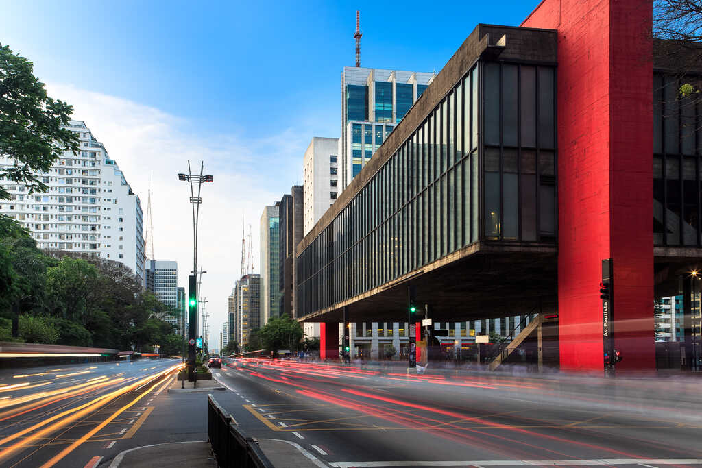
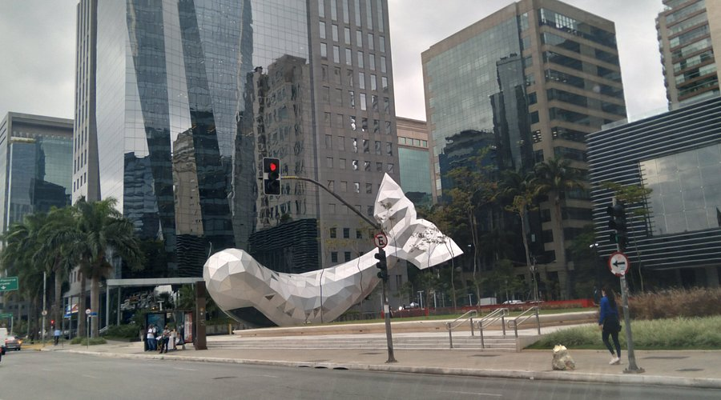
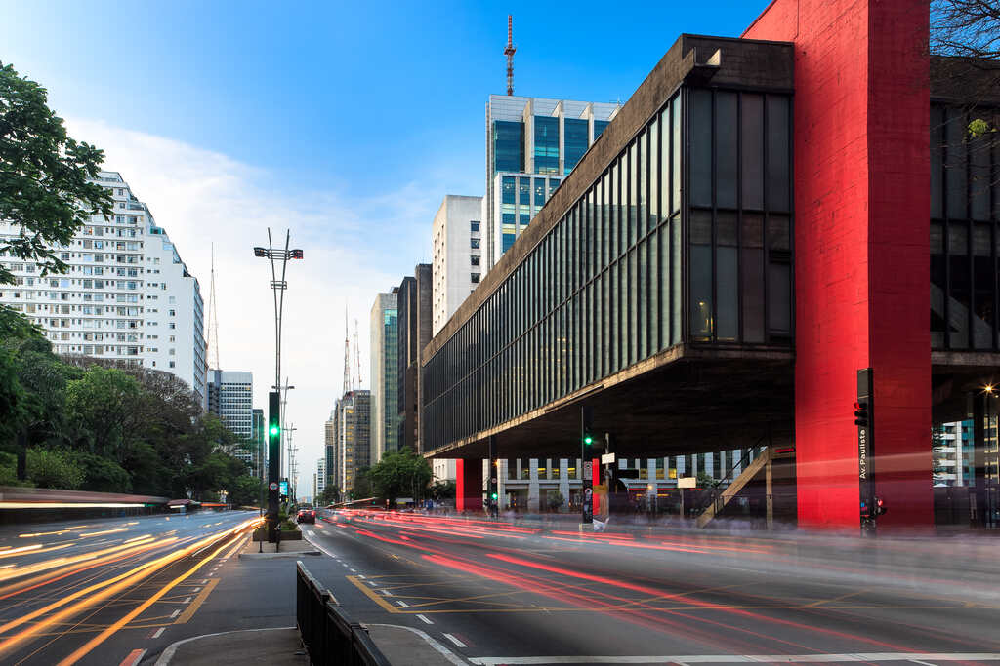
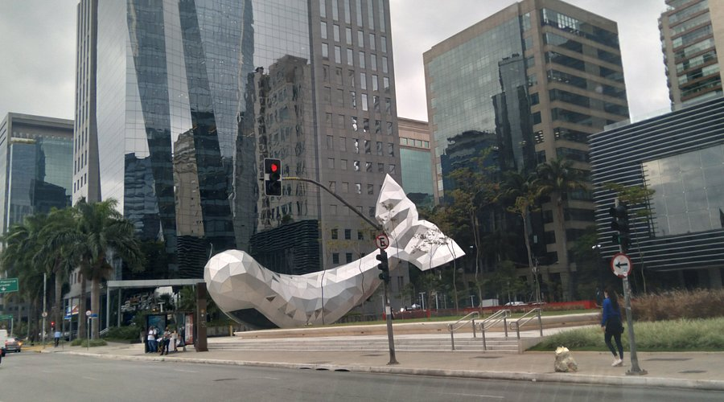
2. Guarulhos
Grande polo industrial e abriga o principal aeroporto internacional do Brasil.
População: ~1,4 milhão
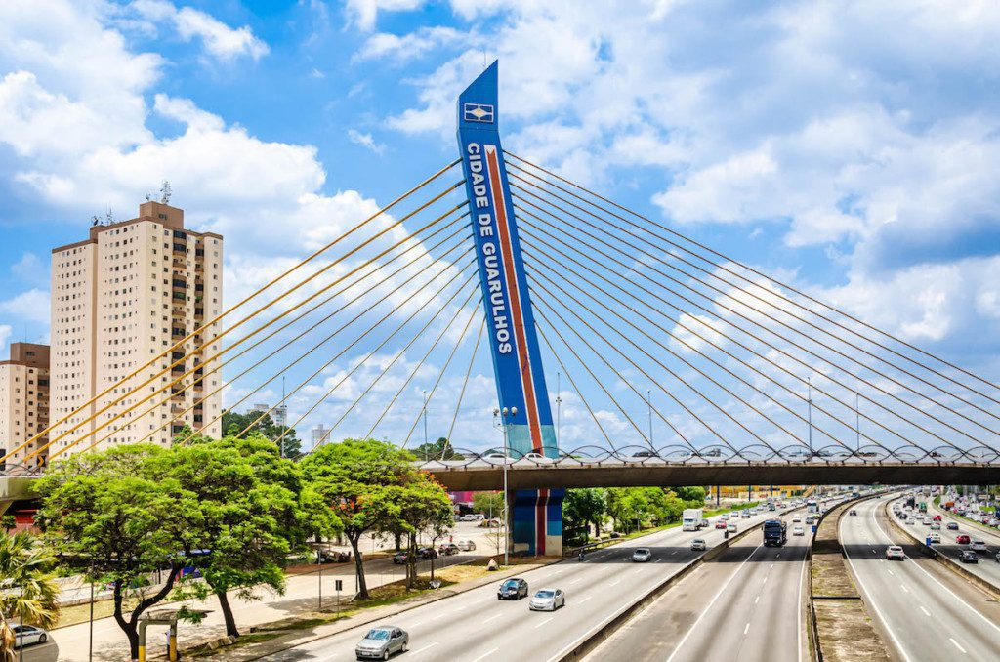 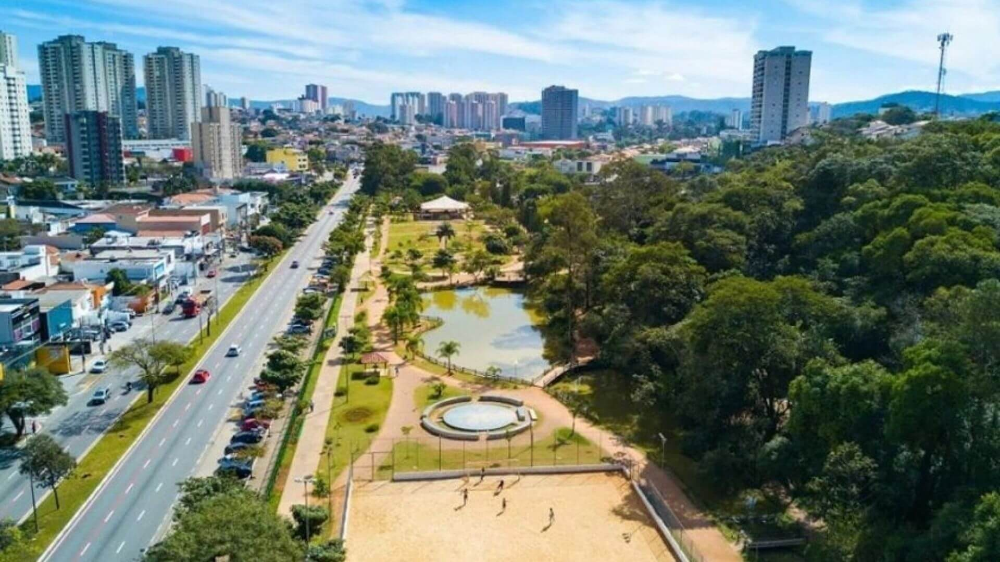 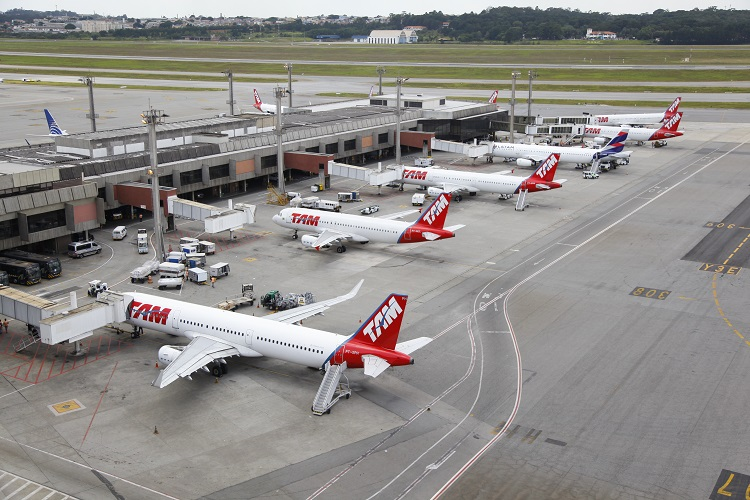3. Campinas
Importante centro de tecnologia, ciência e educação.
População: ~1,2 milhão
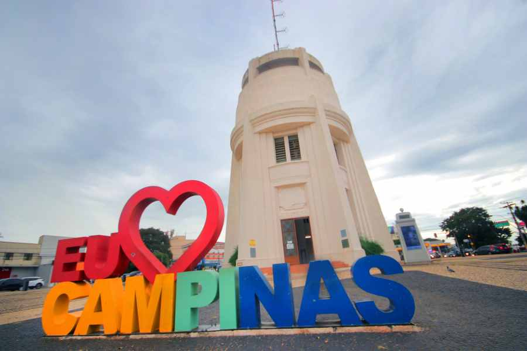
4. São Bernardo do Campo
Conhecida por sua forte presença na indústria automobilística.
População: ~850 mil
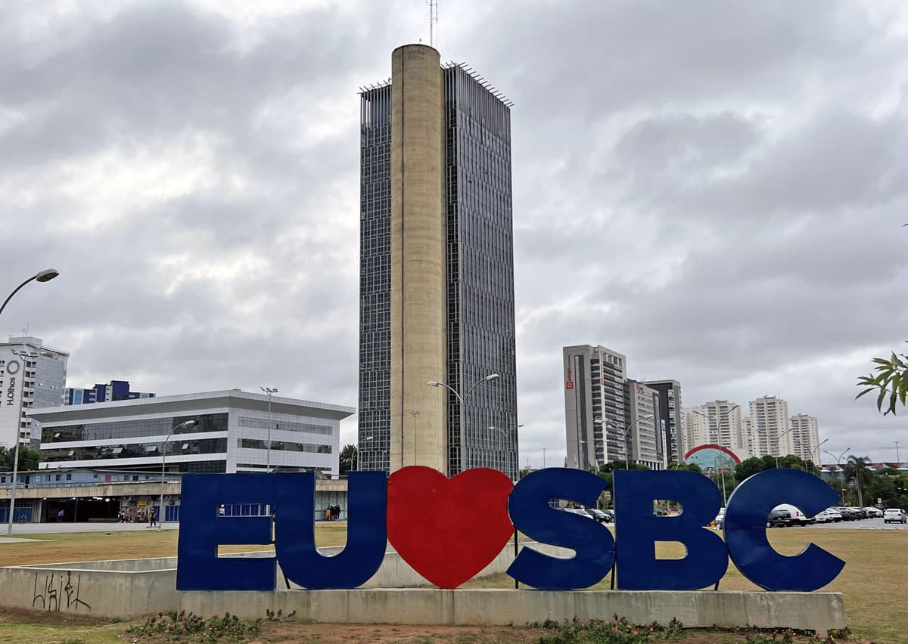 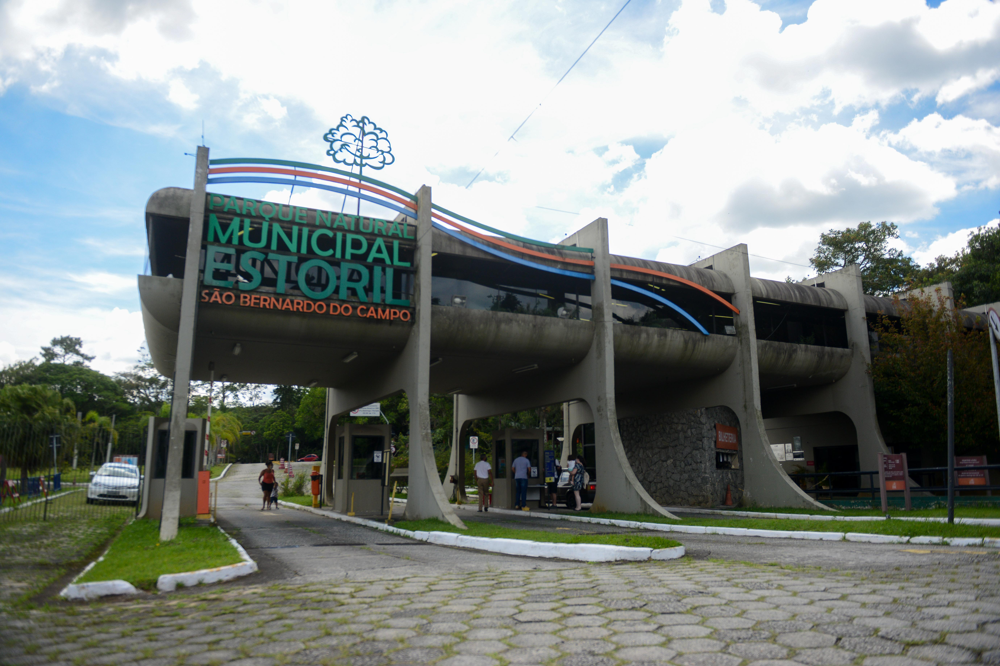 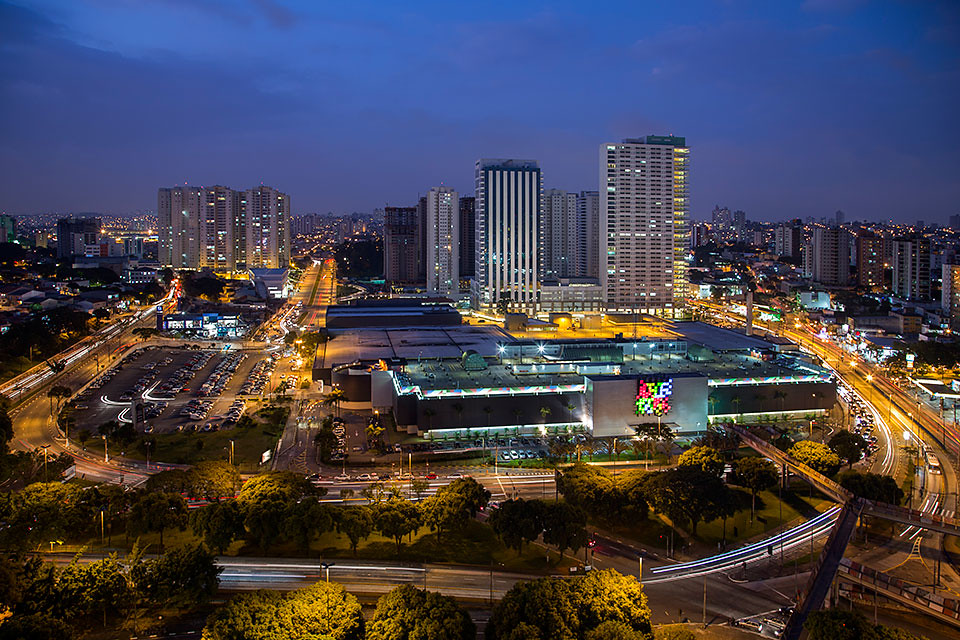5. Santo André
População: ~723 mil
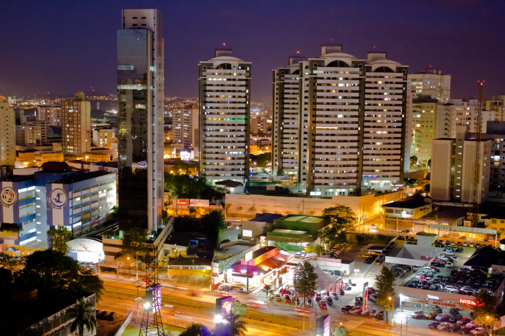 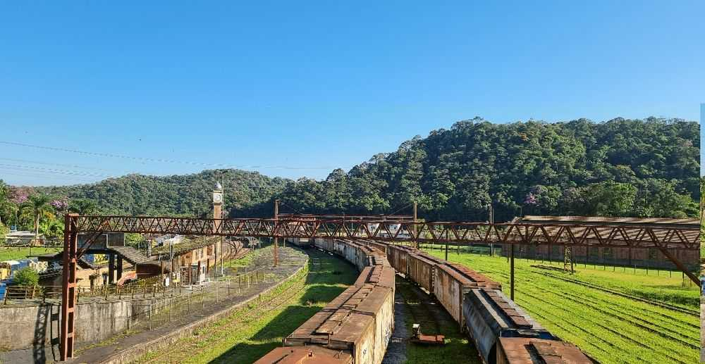 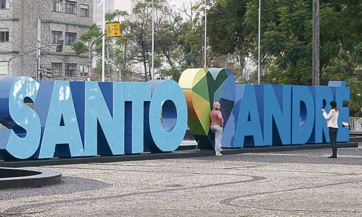